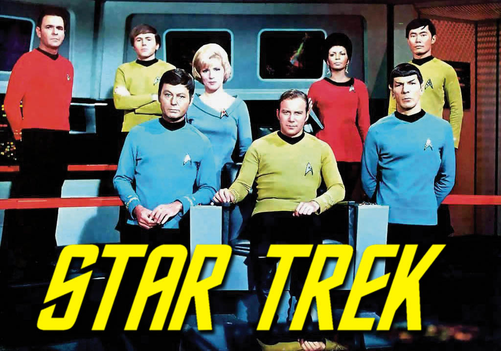

Historia
Star Trek es una franquicia de medios estadounidense creada por Gene Roddenberry. La primera serie de televisión, simplemente llamada Star Trek ahora llamada "Star Trek: La serie original", debutó en 1966 y se emitió durante tres temporadas en NBC. Siguió las aventuras interestelares del capitán James T. Kirk (William Shatner) y su tripulación a bordo de la nave estelar Enterprise, una nave de exploración espacial construida por la Federación Unida de Planetas en el siglo XXIII. El canon de Star Trek incluye la serie original, una serie animada, seis series de televisión derivadas, la franquicia de películas y otras adaptaciones en varios medios.
Al crear Star Trek, Roddenberry se inspiró en las novelas de Horatio Hornblower, el libro Los viajes de Gulliver y Westerns como la serie de televisión Wagon Train. En 2020 se estrenó una nueva serie, Star Trek: Picard, secuela de La Nueva Generación. Las aventuras del equipo de La nueva generación continuaron en cuatro películas adicionales. En 2009, la franquicia de la película se sometió a un "reinicio" establecido en una línea de tiempo alternativa, o "Kelvin Timeline", titulada simplemente Star Trek. Esta película presentó un nuevo reparto que retrata las versiones más jóvenes de la tripulación del espectáculo original; Sus aventuras continuaron en Star Trek Into Darkness (2013). Su secuela, Star Trek Beyond (2016), que se lanzó para coincidir con el 50 aniversario de la franquicia.
Star Trek se caracteriza por su influencia cultural más allá de las obras de ciencia ficción. La franquicia también es conocida por sus posturas de derechos civiles progresistas. La serie original incluyó uno de los primeros lanzamientos multirraciales de televisión.